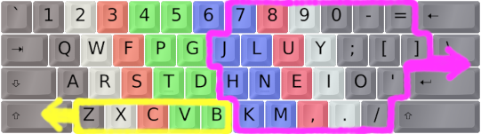
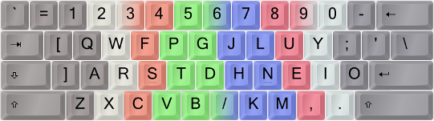
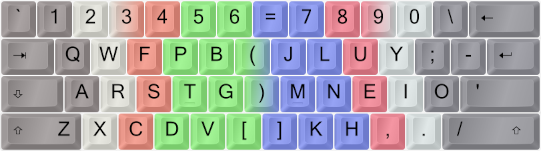

Board Wars: The Rise of Ergonomy

(I am actually aware that 'ergonomy' isn't a proper English word. The right word is 'ergonomics'. But I happen to like 'ergonomy'. A lot.)
On this page I go through various ways you can make your keyboard more ergonomical, in addition to using an optimized layout like Colemak. I believe that a fully modded standard row-staggered keyboard is actually more ergonomic than most single-piece ortho matrix boards, not accounting for key switches! A split board – especially a column-staggered or sculpted one – is probably better still, and programmable boards with several thumb keys can be a true blessing indeed.
But not everyone can afford to buy an expensive split mechanical keyboard, and what if you want to type on your laptop? With the mods described here you can have a free, portable solution that makes your existing keyboard a lot more ergonomic than it was before.
Shai Coleman on ergonomics while learning a new keyboard layout:
Check out Viper's Ergonomics Guide written by the fastest Colemak typist in the world at the time. You don't have to do everything he says if you don't like green tea or something, hehe – but you should read it and think about what things you can do to help your body besides changing your keyboard layout.
Another thing to consider is ergonomic additions like Extend layers and the Compose method that aren't directly about the layout or its mods but provide better ways of editing and navigating and doing all sorts of typing-related things. A combination of home-position based layers and sequences can really help you do things more efficiently with less strain, and reduce mousing.
Board Wars: The Rise of Ergonomy
(I am actually aware that 'ergonomy' isn't a proper English word. The right word is 'ergonomics'. But I happen to like 'ergonomy'. A lot.)
For the most part, the mods described below are fully modular. You can add any of the Angle, Wide, Curl(DH), Sym or modifier mods individually or in ensemble, using for instance the EPKL program for Windows.
But wait – what are these C-A-W-S ergo mods actually? Let's sum up the whats and hows of each mod before we go in depth in the sections below. If you want a little more info about a mod's pros, cons and options, look inside the FAQ box under the What/How bit.
"Any questions before we proceed?"
The abbreviation CAWS or parts of it (CA, AW, AWS...) is short and snappy and practical when referring to ergo mod combos. Why then do I present them in the order AWCS here? As you'll see in the AngleWide section below, I think of Angle/Wide as the "hard" key mods and Curl/Sym as "soft" letter/symbol mods. Don't worry about it, heh.
But now, for a few pros and cons of these mods – some clear-cut and some debatable. Again, see the sections below for more info.
Note that on a standard row-staggered keyboard, the Curl(DH) mod should be used in combination with an Angle or AngleWide mod to work as designed. CurlAngle is the Colemak-DH standard for row-staggered keyboards. Really. I know many newcomers don't see the benefit in the Angle mod because it looks strange at first, but do try to see its merits.
As seen in the "Con" points, many of these mods aren't necessary/relevant if you have a truly ergonomic keyboard, like a split column-staggered marvel with a bunch of thumb keys. But you know, not everyone can afford such a keyboard, nor have the opportunity to lug one around everywhere. My own mech keyboard has a standard form factor. And I type a lot on my laptop, too. CAWS is a way of greatly improving standard keyboards, and it doesn't have to cost you anything!
"TL;DR?!? Too much confusion! My head hurts!"
I try to be concise enough for a newcomer, and yet precise enough to not omit anything useful. It can be a very delicate balance. The Big Bag can get too big for some and at the same time too small for others.
Layout modding isn't a simple topic and if you don't feel like spending too much energy on it then just use a standard solution like vanilla Colemak out of the box! You can't go very wrong, it's an excellent choice as it is. But maybe you do want to embark on an exciting ergo-mod journey, and yet you want a map with bigger and friendlier letters...?
For a condensed yet fairly complete explanation of the Colemak mods (most of them may be used on other layouts too) described below, I recommend having a look at CSGO's Intro to Colemak Mods over at Reddit.
CSGO gives you cliff notes and diagrams on what the C-A-W-S ergo mods are, and what fingering to use. Clear and handy!
When you do feel ready for it though, there's much more in-depth info here in the Big Bag so please come back and read on whenever you're up to it.
Welcome to the Rabbit Hole!The CurlAngleWideSym battery for Colemak is what I refer to as Colemak-CAWS. Add some layers like Extend and Colemak[eD], and witness the typing power of a fully operational keyboard setup!
Why go for CAWS, I hear you say? ( ͡~ ͜ʖ ͡°)

It has been noted that these mods can really open up, say, a cramped notebook keyboard so much that it feels "bigger on the inside"!
So maybe this slogan is suitable? ￣(=⌒ᆺ⌒=)￣
Typing Advancement: Row Displacement Increases Spaciousness (T.A.R.D.I.S.)
Technically speaking these mods mostly displace half-rows, but bear with me please.
Angle and Wide are the oldest of the ergo mods I use. They are what I call geometric or "hard" mods: They change the form factor of the board, like ergonomic keyboards do. You don't have to move your key caps around to use them but it'd feel natural to do so. And they could be used with QWERTY and other layouts just as easily as with Colemak.
These are ergonomic mods, moving some keys around to achieve straight wrists (the Angle mods), better hand separation and lower right pinky load (the Wide mods). The Angle part is almost a no-brainer to me as it allows the left hand to keep a straight wrist without changing the fingering on ZXCV, and makes B easier to reach. Colemak creator Shai himself has given his blessing to this mod! The Wide mod is more optional, but it does put some load off the right-hand pinky, widen the arm distance (useful particularly for small keyboards, but nice regardless), and provide easier access to AltGr/Enter/Backspace/RShift – all at a very low learning cost.
The Angle ergo mod for ISO keyboards is simple enough. Each image color corresponds to a finger.

The AngleWide-ISO ergo mod. Three for one: Straight wrists, less pinky load and hand separation.
With a 102/105-key ISO keyboard the Angle mod is very smooth indeed, and I strongly recommend at least an Angle shift if you have an ISO keyboard! The only key that's displaced is the ISO key (marked with Πin the images above). You can put what you like on that key such as locale special letters; it's practically a spare key. One possible use for it is a handy Compose key Рcheck the Modifier section below.
The most common US/ANSI Angle solution is Angle(Z). It moves Z to the middle which is a bit more dramatic but still very beneficial. The Wide mod on an ANSI board needs to displace the apostrophe but it can simply slide one step upwards so it isn't bad. But see below for a possibly better solution using a Sym mod in addition.

An ANSI keyboard with finger coloring for the traditional, unergonomic way.
Keys moved by the Angle (yellow) and Wide (purple) mods are circled.
Arrows show the main key shift directions.
Using the Angle(Z)Wide-ANSI ergo mod, you now have a more ergonomic keyboard for free.
Note how you can keep both wrists straight as your fingers reach down for the bottom row, as indicated by the red lines. Use the middle finger for C etc., as with the traditional technique.
The upper row doesn't need Angle modding since up there you can easily open your hand to reach each key without angling the wrist. Also, the 1/4 key row stagger on the upper row is different from the normal 1/2 key stagger, so Angle-modding it would prove too drastic.
When I use these mods I like to move the key caps around and make the change global - my family actually don't seem to mind as the changes are fairly intuitive and unintrusive, leastways for the run-of-the-mill keyboard user who looks at symbol key caps to find them. I got used to the changes quickly, too. But on laptops I usually don't move anything around and you can implement the change on a per-user basis if you wish. (If you do, take care with your logon dialogs and passwords!)
One issue with using a Wide mod and not moving your key caps accordingly, is the loss of the right-hand homing nub. This annoyed me in the beginning but now I'm fully used to it and find my way just fine with the bump on the wrong key. In the beginning, I scratched the new homing key a little which proved enough for a tactile homing feel. Others have used a dab of glue or a piece of tape on the displaced N key. It doesn't take much.
Stevep99's Ergonomic Keyboard Mods page lists the above mods and more.
Actually, there are a couple of other possibilities for ANSI boards, since they don't have a near-perfect solution like the ISO crowd. These are less common but some prefer them. I call them "A-Wing" and "FatZ". And then, there's the insidious "Angle Cheat" too...:
More Angle Mods:
Again, this is the most common Angle/Wide mod for an ANSI/PC104 keyboard:

The ANSI-Angle(Z)Wide(Qu) ergo mod.
One alternative for a straight left wrist is the A-Wing mod which has a cool name but little usage: Split the bottom row while shifting all the others to the right. With A-Wing, you won't get the "wide" experience, and must live with an increased distance to Tab and LShift. In comparison, hitting LShift when using Angle(Z) and straight wrists is actually rather nice!
The ANSI "A-Wing" ergo mod.
I haven't implemented the Fat-Z ANSI Angle mod anywhere, but I will mention it here. The trick is moving Z to the LShift key! LShift then needs a new home which should be better than the old B position. One solution is to move LShift to the Alt key and put Alt on the old B key. But this means moving modifiers around, so I'm a bit wary of it. Also, a fat Z key looks a bit odd, but if it works for you then all's fine!
If you go DoubleFatWide and do the same with RShift and Slash, you'll get a Wide mod with better Slash key placement too. Fat-Z and its fatter cousin DoubleFat may be the best solution for people who use thumb Shift or other ways of shifting!?
One possibility tried out by BenDover178 is to make LShift a dual-function key that produces Z on tap and LShift when held. This precludes Sticky Shift, but that may not be a hurdle for many. This trick is hard to implement unless you're using TMK/QMK controllers. See the Modifier Modness section below.
The "DoubleFatWide" ergo mod for ANSI keyboards; shown with the DH mod and some extras.
The above image shows a DoubleFatWide-modded ANSI board, inspired by BenDover. It also has some interesting (and optional!) extras:
"Angle-Cheat":The least technically intrusive but probably not the smartest way of ensuring a straight left wrist is a trick I've seen many typists do intuitively: Simply change the ZXC fingering so that the index finger hits C and so on. This is what many of the fastest QWERTY and Colemak speed typists have been using, so you can certainly type fast with it! And it'll be available for both Colemak and QWERTY without any tweaks. On the downside, this trick does nothing to improve the B position, it swaps the SC/CS same-finger bigram for the more common CT/TC one (generally considered A Bad Thing™) and it doesn't enable Colemak-DH (see below). Colemak speed record holder Viper used to Angle-Cheat but now he prefers a proper Angle mod – in fact, he uses the whole CAWS mod battery like me!
Ergo mod background info
See for instance this topic by cevgar on Wide mods, and this topic by me on Angle mods.
Other names:
Many of these mods have been discussed under other names. So if you come across older posts here's a key to what we've been discussing:
6s and 7s With U Some Wide mods have the = key between 5 and 6 whereas mine has it between 6 and 7. Most split keyboards with standard row-staggered geometry follow my way and others – particularly matrix boards – have 6 on the right hand. The 6-on-right variant is a priori more symmetric with five number keys on each hand, but on a normal-staggered board mine has 6 on the shortest and = on the longest stretch from the home position which is as it should be. Efficiency before aesthetics. ;-)
There has also been discussion about which key should be on the "Left Bracket key" upper-right position: On ANSI boards it pretty much has to be the apostrophe but on ISO boards another fairly common key should get the honor. I prefer the forward slash in the Wide-ISO mod, as both slash and question mark are relatively common symbols. In my Symbol key mod (see below) I put the even more common hyphen-minus there which feels very good.
The point of the Curl(DH) ergo mod which gives us the Colemak-DH layout variant, is to make the home row curl down like the fingers of a relaxed hand does instead of forcing it to a straight line as was commonly thought best some years ago. It does this by swapping a few keys around but no keys change fingers. See this instructive image from the DH mod creator SteveP's Colemakmods site:

Changed keys from "vanilla" Colemak to Colemak-DH. No keys change fingers. An Angle mod is included.
Several typists have felt that the middle-trench D and H positions of Colemak weren't so comfortable and as a result the Workman and other layouts were made. However, they lose to Colemak on several other important performance statistics (more keys moved, and/or more same-finger bigrams, and/or poorer performance on other stats). So the proposal by Forum user stevep99 in 2014 to fix the issue based on Colemak without any letters changing fingers was a stroke of genius! It's a low-cost improvement of the default straight-homerow Colemak. And I still think of it as Colemak because it really is, keeping its good stats for travel distances, finger usage and same-finger ratios.

My personal assessment of key position goodness (from green via blue to purple), using a straight-wrist hand position with relaxed fingers.
The Colemak-DH mod also puts the G key back to its old QWERTY position which more than offsets moving the less frequently used B. On the right hand side, the M and H keys move compared to standard Colemak. But this investment returns a larger gain, as the common H moves to a better position. One substantial benefit is that the common bi-/trigram HE and THE are made better.
The DH mod for normal row-staggered keyboards depends on using an Angle mod which is easier on an ISO keyboard but there are decent options for "US"/ANSI boards too as seen above.
"Why can't I use Colemak-DH without that pesky Angle mod? I don't like it!"
Yes, we do get that one a lot from newcomers. Please read the Angle/Wide section above to understand what the Angle mod does: It allows you to keep the left wrist straight like your right wrist has always been. That's important for typing comfort, and so it's baked into the DH mod for row-staggered keyboards.
Even though the simplicity of the ISO Angle mod doesn't quite carry over to the ANSI world and the rare Z has to move into the middle as a result (unless you use an advanced type of Angle mod like FatZ), do keep in mind that this key is indeed rare and the slight hassle of moving it and the Undo shortcut is abundantly warranted in our strong opinion and experience. There is a little discord in the typing community on this subject, but many top typists and layout designers support the idea of the Angle mod wholeheartedly.
Colemak-DH was designed for use with an Angle mod on row-stag boards, and we believe that using it without is disregarding its potential. The V key will be in a too poor position. And your left wrist will still be at an uncomfortable angle, experiencing what's known in medicine as ulnar deviation.
If you have a matrix/ortholinear or any similarly advanced ergonomic keyboard there is no Angle mod on it. Hopefully your board is split or angled in such a way that you can type with straight wrists; I don't trust single-slab/"plank" ortho boards although some seem to like those. So Colemak-DH for ortho boards is just Colemak-Curl.
In case you're wondering what to do if you have both kinds of board, I've heard from many people in this situation that using an Angle mod on the row-stag actually feels more like the ortho experience, Z be damned! That's how cursed the traditional left-hand typing technique is.

If you want to learn Colemak-DH using the Tarmak transitional layout progression, that's possible too! You can break up the early steps if you want to, and the 2nd Tarmak-DH step is tweaked a little. There's more info in the Tarmak-DH section.

The Colemak-CurlAngleWide a.k.a. Colemak-CAW ergo modded layout. This is Colemak-DH plus the Wide ergo mod. Each image color corresponds to a finger.
I've dubbed my CurlAngleWide modded Colemak the Colemak-CAW! It's a Colemak at heart, but sufficiently modded that I wanted a snappy name for it. And yes, that's also a tip-of-the-hat to Billy Macaw in CATS! Also, there have been spiritual developments...:
Colemak ⲔⲰ lighthearted musings
Would you believe that in ancient Egyptian Ka means the "soul-body" or life force (while Ba is the "traveling soul" and Akh the "eternal/divine soul"), its hieroglyph being the symbol of... two hands!!! Maybe that's something right there...?
Delving further down the rabbit hole, Wikipedia states that the Coptic word ⲔⲰ (kw) means approximately the same as Egyptian Ka, and this claim is further supported by a book on hieroglyphics I found. As an added bonus, the latin translation of Ka is ... wait for it ... "genius"!
To make it even stranger, ⲔⲰ would well transliterate to CAW! So maybe Colemak-ⲔⲰ is the new thing then? The life force of ingenious two-handed typing!

(Easter Egg spoiler: If you're using EPKL try pressing Extend+Home!)
Or, as the great poet Edgar Allan MacCole so famously put it:
Curl(DH) mod background info
The DH mod has had a few iterations in addition to the standard one, which from 2020 is Steve's original DHm mod swapping the Colemak(Angle) D–V–B–G and H–M positions. This variant was selected as the standard since it's good both for standard row-staggered and modern matrix/column-staggered keyboards. My old DvH (DbgHk) mod kept the ZXCV keys together, and the 2017–2020 DHk standard had K on the home row and M in the "pocket" – which most typists agree is just a little better on row-staggered boards but significantly worse on matrix boards. We've tried out all these versions a lot, and arrived at a single strong and flexible DH standard.
See stevep99's Colemakmods page, as well as the main Colemak-DH topic and links therein. Also, note my review of the DH mods and the 2017 DHk standard topic.
If you type a lot in a language in which L is more common than H (including several latin and Nordic languages), it may be worth considering a further tweak in which L is moved down to the better position on the lower row and H gets whatever position you deem second-best. There have also been mod proposals for the Dutch who need a better J position, but it turns out that all the other index finger keys were more important still. I believe a Dutch typist is better off using some trick like the Compose method to type the `IJ` bigram.
The symbol keys weren't touched when Shai designed Colemak, since they're quite rare and mostly not an integral part of the typing flow; they're also a bit different in locale layout variants. Semi-/colon was the exception since it sat in a too good position in QWERTY.
While I do agree that keeping symbols in the standard US layout positions shouldn't affect typing speed or comfort substantially, notice that some keys like '" and -_ are more common than several letters – and they do figure in normal text flow. Other layout creators like Dvorak have chosen to optimize symbol key positions too, obviously at the cost of more keys moved from their original positions.
For the more enthusiastic layout modders, I've made a symbol key rotation mod that I simply call Sym.
Vanilla Colemak, for comparison:
-----------------------------
7 8 9 0 - =
j l u y ; [ ] Cmk
h n e i o ' \ (ISO)
k m , . / _____
-----------------------------
Non-Wide Sym mod:
QU-SC swap and a MN > LB > PL loop
-----------------------------
7 8 9 0 = [
j l u y ' - ] Cmk-Sym
h n e i o ; \ (ISO)
k m , . / _____
-----------------------------
WideSym mod:
Together with the Curl(DH)Angle ergo mod, WideSym makes Colemak-CAWS.
-----------------------------
\ 7 8 9 0 =
[ j l u y ' - Cmk-CAWS
] m n e i o ; (ISO; right half)
/ k h , . _____
-----------------------------
Colemak-CAWS: CurlAngle (Cmk-DH) plus WideSym ergo mods, on an ANSI board.
The simplest part of the Sym mod is a single swap of the apostrophe/quote and semicolon/colon keys, which I feel makes text entry more natural and comfortable since the apostrophe is an integral part of English text and quite common. Heavy C coders may disagree with it, but even they may appreciate that single and double quotes are common in code as well. The semicolon key is still only one little stretch away from the home position.
Some people may have shorter pinkies and thus enjoy the QWERTY P position less than the lateral outwards stretch to the QWERTY ' key. These typists should probably use only the second part of the Sym mod. Some prefer to use their ring finger for the QWERTY P key, too.
The other Sym element brings the hyphen-minus key down from the number row, at the cost of less common keys like the brackets. For Wide modded keyboards, the less common slash/question and the rare backslash/pipe key are demoted. This should be very good for coders too, who use the underscore a lot. Dvorak users know that a better hyphen placement can be nice.
Optional addition: Swap parentheses and brackets.
() <--> []
Colemak-CurlAngleWideSym on an ANSI board, with ()-[] swap:
----------------------------------------------------
1 2 3 4 5 6 \ 7 8 9 0 =
Q W F P B ( J L U Y ' - ; Cmk-CAWS-ANSI
A R S T G ) M N E I O (w/ parentheses)
X C D V Z / K H , .
----------------------------------------------------
Cmk-CAWS-ISO: Colemak with CurlAngleWideSym ergo mods, on an ISO board.
(The yellow © key in the middle can represent a Compose key; see the index page.)
Shift, Ctrl and Alt are well-known examples of modifier keys. I like to include Sequencing keys like dead keys in the wider definition, as they too modify the output of other keys instead of producing output on their own.
As such, there are different types of modifier keys and the Big Bag adds new possibilities. I've made a list of mod types, if you're interested.
Types of modifier keys:
This is a list of what I consider types of modifier keys.
Note that several of the special keys in the Big Bag are a combination of modifier types.
After each type (in parentheses) I've included examples of this mod type as used in the Big Bag.
In the Linux world, it's quite common to shuffle around the modifiers a bit. Caps can become Control, Esc or something else for instance. But let's take it to the next step, and use custom modifiers too!
We've already encountered a modfied modifier in the Big Bag: Extend, which usually puts the not-so-useful CapsLock key to far better use. In the original Colemak release from 2006, the CapsLock key was dumped for a second Backspace. Extend is a great improvement on that idea.
Taking things even further, in EPKL the Extend key can be modified by other modifiers to select different Multi-Extend layers, and it can be a tap-mod key that produces for instance a Backspace when tapped quickly but Extend when held. Advanced modifiers lead to new and powerful possibilities.
SteveP99 is a big fan of remapping in particular the Alt keys, since they're thumb keys which can be very ergonomic. He likes to put Extend and/or Shift on those keys. See his Ergonomic Keyboard Mods GitHub page for more info.
A related idea is swapping both Alt and Shift keys so you can thumb Shift with both thumbs. This should take a load off your pinkies and give the otherwise underused thumbs more to do while allowing very fast and flexible typing.
For years I didn't follow Steve's example, but now I've taken to using both the Alt keys for special modifiers since I want thumb keys for useful tools like Repeat and Compose (see the Sequences section). Having such power keys at your thumbs' disposal is quite awesome.
I first tried using an Alt key for Repeat, but at first I missed my familiar Alt and AltGr modifier positions too much. Eventually though, I warmed up to the idea of putting Alt one key to the left and finally Repeat on Alt after all. The Win key found a home in the mid-board position (QWERTY B) for a while, but then it landed on the RCtrl key since I never used it.
Since Repeat makes same-thumb bigrams with Space but CoDeKey does not, I recommend having Repeat on the thumb you don't use for Space. I space with my right-hand thumb.
On the right hand side, I did a similar thing. There's usually a key or two to the right of RAlt that aren't really necessary, at least on full-sized boards. On my laptop there's a PrtSc in that position, and that can be relegated to a layer or moved elsewhere.

An ISO keyboard using Colemak-CAWS. The keys next to Alt are often Win (GUI); the last one Menu (App).

Moving some keys around, we now have two thumb keys. Shown here are Repeat (left) and CoDeKey (right).
Where does the Win key go then?

Using the ISO-Angle mod there's a spare key in the middle of the lower row.
Failing that, the key(s) next to RCtrl are usually available.
I find that Win can be moved around without too much mental disruption, since I don't use it in the middle of flows. Your mileage may vary.
There are several possibilities depending on your preferences, beyond those seen in the image above. Rarely used keys that can be accessed via Extend such as Menu or Ins are good candidates. Or you may choose to nuke your RCtrl key if you don't use it?
I tried having Win on my ISO-in-the-middle key for a while, but some chords got a little awkward that way and it felt weird. So I moved it to a thumb key. Win+key chords will be odd at first, but I think it'll settle down just fine eventually.
I used to be a little wary of modifier modding, as it can be hard to implement reliably across platforms. Sometimes keys don't play well together, possibly because of hardware limitations in the scan matrix of cheaper keyboards and possibly because an OS (or Java/Flash/etc) can get confused when a non-modifier key becomes one. I've had my share of troubles with the Extend-modifier keys (Ext+A/S/T for Alt/Shift/Ctrl).
I recommend using Registry remapping or a "hacked" MSKLC layout for Windows to make the remapping work at a sufficiently low level, and similarly edit the keycodes for Linux XKB (e.g., swap the numbers for '<LFSH> = 50;' and '<LALT> = 64;').
Another issue is the differences between keyboards when it comes to the position of particularly the Right Alt key, making it very convenient on some boards but not on others. I do believe you should use a keyboard with a good RAlt position. Note that the Wide ergo mod helps with that.
Another modifier mod worth mentioning is Sticky Shift. With this mod, which is available out-of-the-box in many OSes, you can tap a Shift (or Ctrl) key and then another key to released a shifted (or control) character. It's used by some of the fastest typists because with a chording Shift there's a higher risk of getting DOuble CApitals at high speeds. I find it quite pleasant to use. EPKL supports setting one or more modifiers as Sticky alias One-Shot Modifiers. If you move the Shift keys to thumb keys as described above, Sticky Shift should still be useful.
As briefly mentioned above, Dual-function keys is another interesting possibility. I've implemented it for TMK/QMK and EPKL. The idea is that a tap produces one key press, typically a letter, but holding down the key makes it a modifier instead. This may be a little confusing but also quite useful! Keys like Enter and Esc that don't need to be repeated are best for this, since the tapped key won't be able to repeat this way.